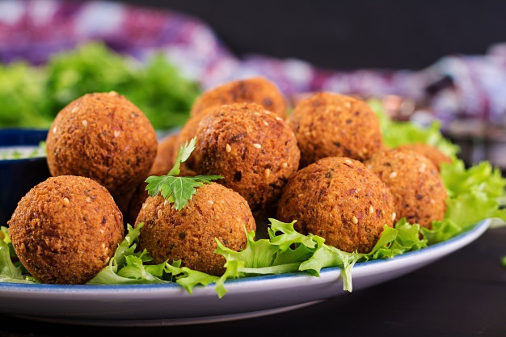

"Falafel"

Description
Falafel is a common form of street food or fast food in Egypt as well as the Levant.
The croquettes are regularly eaten as part of meze. During Ramadan, falafel balls are sometimes eaten as part of the iftar, the meal that breaks the daily fast after sunset.
Falafel became so popular that McDonald's for a time served a "McFalafel" in its breakfast menu all over Egypt. Falafel is still popular with the Copts, who cook large volumes during religious holidays.
Ingredients
- 3/4 cup (135 grams) dried broad beans
- 2/3 cup (130 grams) dried chickpeas
- 1/3 cup coarsely chopped flat-leaf parsley
- 2 tablespoon ground cumin
- 2 tablespoon ground coriander
- 2 teaspoon salt
- 1 teaspoon bicarbonate of soda
- 1 small brown onion, finely chopped
- 1 tablespoon plain flour
- 1 egg
- vegetable oil, for deep-frying
Directions
- Place beans and chickpeas in separate bowls, cover with water; stand overnight. Drain, rinse separately under cold water; drain.
- Bring a medium saucepan to the boil; add beans and return to a boil, then simmer, uncovered, 5 minutes. Drain.
- Blend or process beans, chickpeas, parsley, cumin, coriander, salt, soda, onion, flour and egg until almost smooth. Shape level tablespoons of mixture into patties; place on tray, cover, refrigerate 30 minutes.
- Heat oil in wok; deep-fry falafel, in batches, until browned. Drain on absorbent paper. Serve falafel with hummus, if desired.
back to the first page.